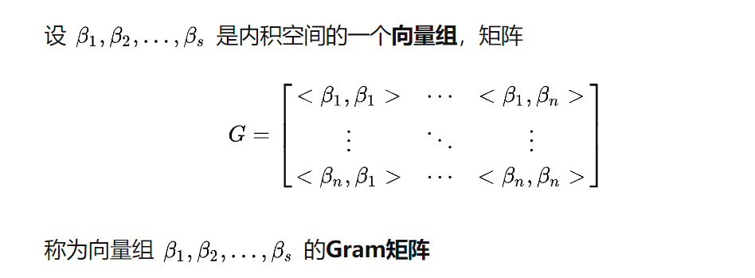

感知机
感知机在1957年提出，属于最古老的分类算法之一。虽然从今天来看，他的分类模型在大多数情况下泛化能力不足，但它是支持向量机（SVM）和深度学习，神经网络的基础，能对之后的学习起到较大的帮助。
感知机模型
感知机原理很简单。在二维平面上说，就是要找到一条直线，直线的一边是一类，另一边是另一种类别。放到三维或更高维度中，就是找一个超平面，能够把多有二元类别分开。如果找不到这样的一条直线或超平面，就意味着类别线性不可分，也就无法使用感知机模型进行数据分类。使用感知机一个最大的前提，就是数据是线性可分的，这导致感知机有很大的局限性。其他的分类算法中，如支持向量机可以通过核技巧来让数据在高维可分，神经网络可以通过激活函数和增加隐藏层来让数据可分。
用数学的语言来说，如果我们有m个样本，每个样本对应于n维特征和一个二元类别输出，如下：
$$ (x_1^{(0)}, x_2^{(0)}, …x_n^{(0)}, y_0), (x_1^{(1)}, x_2^{(1)}, …x_n^{(1)},y_1), … (x_1^{(m)}, x_2^{(m)}, …x_n^{(m)}, y_m) $$
我们的目标是找到一个超平面，即：
$$ \theta_0 + \theta_{1}x_1 + … + \theta_{n}x_{n} = 0 $$
超平面是指n维线性空间中维度为n-1的子空间。它可以把线性空间分割成不相交的两部分。比如二维空间中，一条直线是一维的，它把平面分成了两块；三维空间中，一个平面是二维的，它把空间分成了两块
让其中一种类别的样本都满足$θ_0+θ_1x_1+…+θ_nx_n>0$ ，让另一种类别的样本都满足$θ_0+θ_1x_1+…+θ_nx_n<0$ ，从而得到线性可分。如果数据线性可分，这样的超平面一般都不是唯一的，也就是说感知机模型可以有多个解。 可以通过增加一个特征$x_0=1$，使超平面表达式变为$\sum\limits_{i=0}^{n}\theta_{i}x_{i} = 0$，用向量表示更为简便：$\theta \bullet x = 0$，其中$\theta$和x都是（n+1）*1的向量，$\bullet$为内积。
本文后面的表示均为向量表示。
感知机的模型可以定义为：$y = sign(\theta \bullet x)$。其中：
$$ sign(x)=
\begin{cases}
-1& {x<0}\
1& {x\geq 0}
\end{cases} $$
感知机模型损失函数
为了后面便于定义损失函数，我们将满足$θ∙x>0$的样本类别输出值取为1，满足$θ∙x<0$的样本类别输出值取为-1， 这样取y的值有一个好处，就是方便定义损失函数。因为正确分类的样本满足$yθ∙x>0$，而错误分类的样本满足$yθ∙x<0$。我们损失函数的优化目标，就是期望使误分类的所有样本，到超平面的距离之和最小。
关于点到超平面距离的公式与推导，可参考这篇文章
由于$yθ∙x<0$，所以对于每一个误分类的样本i ，到超平面的距离是：
$$ - y^{(i)}\theta \bullet x^{(i)}\big / ||\theta||_2 $$
其中，$||\theta||_2$为L2范数
我们假设所有误分类的点的集合为M，则所有未分类的样本到超平面的距离之和为：
$$ \frac{-\sum\limits_{x_i\in M}y^{(i)}\theta \bullet x^{(i)}}{||\theta||_2} $$
这样就得到了初步的感知机函数的损失函数。
研究上式可以看出，分子和分母都含有$\theta$，且他们有固定的倍数关系。所以我们可以固定分子或分母为1，然后对另一个求最小化作为损失函数（分母的话要取倒数）。在感知机模型中，采用的是保留分子，即最终的得到的损失函数为：
$$ - J(\theta) = \sum\limits_{x_i \in M} y^{(i)}\theta \bullet x^{(i)} $$
SVM中选取的是保留分母的做法。两者不同的原因主要是优化方式的不同。
感知机模型的损失函数优化方法
感知机模型的损失函数常用的优化方法主要有梯度下降法和拟牛顿法，最常用的是梯度下降法。
不过普通的基于所有样本的梯度和的均值的批量梯度下降法（BGD）是行不通的，原因在于我们的损失函数里面有限定，只有误分类的M集合里面的样本才能参与损失函数的优化。所以我们不能用最普通的批量梯度下降,只能采用随机梯度下降（SGD）或者小批量梯度下降（MBGD）。
关于不同梯度下降的讲解可以看这篇文章
感知机模型选择的是采用随机梯度下降，这意味着我们每次仅仅需要使用一个误分类的点来更新梯度。损失函数基于$θ$向量的的偏导数为：
$$ \frac{\partial}{\partial \theta}J(\theta) = - \sum\limits_{x_i \in M}y^{(i)}x^{(i)} $$
对应的梯度下降迭代公式为：
$$ \theta = \theta + \alpha\sum\limits_{x_i \in M}y^{(i)}x^{(i)} $$
由于我们采用随机梯度下降，所以每次仅仅采用一个误分类的样本来计算梯度，假设采用第i个样本来更新梯度，则简化后的$θ$向量的梯度下降迭代公式为：
$$ \theta = \theta + \alpha y^{(i)}x^{(i)} $$
其中，$α$为步长，$y^{(i)}$为样本输出1或者-1，$x^{(i)}$为(n+1) x 1的向量。
感知机算法
这一章对感知机算法整个流程做一个总结。
原始算法
算法的输入为m个样本，每个样本对应于n维特征和一个二元类别输出1或者-1，如下：
$$ (x_1^{(0)}, x_2^{(0)}, …x_n^{(0)}, y_0), (x_1^{(1)}, x_2^{(1)}, …x_n^{(1)},y_1), … (x_1^{(m)}, x_2^{(m)}, …x_n^{(m)}, y_m) $$
输出为分离超平面的模型系数$θ$向量。具体步骤如下：
- 定义所有$x_0$为1(为了简化表达式)。选择$θ$向量的初值和步长$α$的初值。可以将$θ$向量置为$0$向量，步长设置为1。要注意的是，由于感知机的解不唯一，使用的这两个初值会影响$θ$向量的最终迭代结果。
- 在训练集中选择一个误分类的点$(x_1^{(i)}, x_2^{(i)}, …x_n^{(i)}, y_i)$，用向量表示为$(x^{(i)}, y^{(i)})$，这个点满足：$y^{(i)}\theta \bullet x^{(i)} \leq 0$
- 对$θ$向量进行一次随机梯度下降的迭代：$θ=θ+αy^{(i)}x^{(i)}$
- 如果训练集中还有未分类的点，则从第二步继续，否则结束算法，此时的$\theta$向量即为最终的结果。
算法对偶形式
对偶形式是对算法执行速度的优化。
通过上一节感知机模型的算法原始形式$θ=θ+αy^{(i)}x^{(i)}$可以看出，我们每次梯度的迭代都是选择的一个样本来更新$θ$向量。最终经过若干次的迭代得到最终的结果。对于从来都没有误分类过的样本，他被选择参与$θ$迭代的次数是0，对于被多次误分类而更新的样本j，它参与θ迭代的次数我们设置为$m_j$。如果令$θ$向量初始值为$0$向量， 这样我们的θ向量的表达式可以写为：
$$ \theta = \sum\limits_{j=1}^{m}\beta_j y^{(j)}x^{(j)} $$
其中$m_j$为样本$(x^{(j)},y^{(j)})$在随机梯度下降到当前的这一步之前因误分类而更新的次数。每一个样本$(x^{(j)},y^{(j)})$的$m_j$的初始值为0，每当此样本在某一次梯度下降迭代中因误分类而更新时，$m_j$的值加1。由于步长$α$为常量，我们令$β_j=αm_j$,这样θ向量的表达式为:
$$ \theta = \sum\limits_{j=1}^{m}\beta_j y^{(j)}x^{(j)} $$
在每一步判断误分类条件的地方，我们用$y^{(i)}\theta \bullet x^{(i)} < 0$的变种$y^{(i)}\sum\limits_{j=1}^{m}\beta_j y^{(j)}x^{(j)}\bullet x^{(i)} < 0$来判断误分类。注意到这个判断误分类的形式里面是计算两个样本$x^{(i)}$和$x^{(j)}$的内积，而且这个内积计算的结果在下面的迭代次数中可以重用。如果我们事先用矩阵运算计算出所有的样本之间的内积，那么在算法运行时，仅仅一次的矩阵内积运算比多次的循环计算省时。计算量最大的判断误分类这儿就省下了很多的时间，这也是对偶形式的感知机模型比原始形式优的原因。
样本的内积矩阵称为Gram矩阵，它是一个对称矩阵，记为$G=[x^{(i)}∙x^{(j)}]$。具体定义见下图:

对偶形式的算法的具体形式如下：
- 定义所有$x_0$为1(为了简化表达式)，步长$α$的初值和$\beta$的初值。可以将步长设置为1，$\beta$要设置为0。要注意的是，由于感知机的解不唯一，使用的这两个初值会影响$θ$向量的最终迭代结果。
- 计算所有样本内积形成的Gram矩阵G。
- 在训练集里面选择一个误分类的点$(x^{(i)}, y^{(i)})$，这个点应该满足：$y^{(i)}\sum\limits_{j=1}^{m}\beta_j y^{(j)}x^{(j)}\bullet x^{(i)} \leq 0$，在检查是否满足时可以通过查询Gram矩阵的$g_{ij}$的值来快速计算是否小于0。
- 对$β$向量的第i个分量进行一次更新：$β_i=β_i+α$
- 检查训练集里是否还有误分类的点，如果有，继续第3步。如果没有，算法结束，此时的θ向量最终结果为下式：
$$ \theta = \sum\limits_{j=1}^{m}\beta_j y^{(j)}x^{(j)} $$其中$β_j$为β向量的第j个分量
If you like this blog or find it useful for you, you are welcome to comment on it. You are also welcome to share this blog, so that more people can participate in it. If the images used in the blog infringe your copyright, please contact the author to delete them. Thank you !